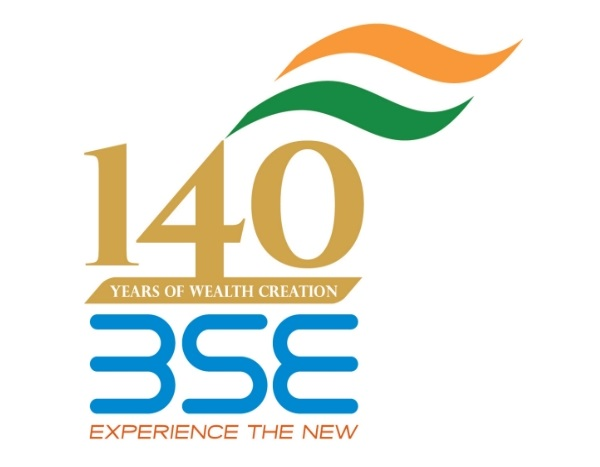
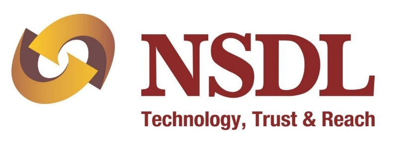
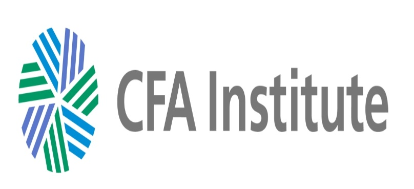

6th Emerging Markets Finance Conference, 2015
Previous conferences
| EMF 2019 |
| EMF 2018 |
| EMF 2017 |
| EMF 2016 |
| EMF 2014 |
| EMF 2013 |
| EMF 2012 |
| EMF 2011 |
| EMF 2010 |
| All events |
17th - 19th December 2015
Venue: Sofitel, BKC, Bombay
Venue: Sofitel, BKC, Bombay
16th December 2015
| 19:00 - 22:00 | Registration and speakers dinner |
17th December 2015
| 8:30 - 9:30 | Registration, Coffee and Tea | |
| 9:30 - 10:00 | Inaugural address: U. K. Sinha, SEBI | |
| Session I | Insider Trading | |
| Chairperson: | Somasekhar Sundaresan, J. S. A. Advocates & Solicitors |
|
| 10:00 - 10:50 | An Analysis of corporate Insider Trading and Earnings Announcements in India [paper] [presentation] Murugappa Krishnan, William Paterson University, and Srinivasan Ranga, IIM, Bangalore Discussant: K. Kiran Kumar, IIM Indore [presentation] |
|
| 10:50 - 11:00 | Break | |
| 11:00 - 11:50 | Insider trading and market structure [paper] [presentation] Yesha Yadav, Vanderbilt University Discussant: Bhargavi Zaveri, Macro / Finance Group, NIPFP [presentation] |
|
| 11:50 - 13:30 | Lunch Talk: Political economy of financial sector reforms Speaker: Rajiv Lall, IDFC Bank |
|
| 13:30 - 15:00 | Panel I: Insolvency Law Reforms | |
| Introductory Remarks | T. K. Viswanathan, Chairman, BLRC |
|
| Presentation: | Richa Roy, AZB Partners and Renuka Sane, ISI, Delhi [presentation] |
|
| Discussion: |
Leena Chacko, Cyril Amarchand Mangaldas Harsh Pais, Trilegal Venkatesh Panchapagesan, IIM Bangalore Bahram Vakil, AZB & Partners (Moderator) Dina Wadia, J. S. A. Advocates & Solicitors Yesha Yadav, Vanderbilt University |
|
| 15:00 - 15:15 | Break | |
| Session II | Insolvency and Corporate Finance | |
| Chairperson: | N. Prabhala, CAFRAL |
|
| 15:15 - 15:35 | Corporate Debt Restructuring, Bank Competition and Stability:
Evidence from creditor's perspective [paper] [presentation] M. Mostak Ahamed and Sushanta Mallick, Queen Mary University, UK |
|
| 15:35 - 15:55 | Evaluating the performance of the corporate debt restructuring
mechanism in India [presentation] Sargam Jain, Kanwalpreet Singh and Susan Thomas, Finance Research Group, IGIDR |
|
| 15:55 - 16:45 | Discussant Panel: N. Prabhala, CAFRAL [presentation] Joshua Felman, IMF |
18th December 2015
| 9:00 - 9:30 | Coffee and Tea |
| Session III | Market Microstructure |
| Chairperson: | Ravi Varanasi, NSE |
| 9:30 - 10:20 | Resiliency: A Dynamic View of Liquidity [paper] [presentation] Monika Gehde-Trapp, University of Mannheim, Alexander Kempf, University of Cologne, Daniel Mayston, Blackrock and Pradeep Yadav, Oklahoma University Discussant: Venkatesh Panchapagesan, IIM Bangalore [presentation] |
| 10:20 - 11:10 | Liquidity provision in a high-frequency environment [presentation] Nidhi Aggarwal and Susan Thomas, Finance Research Group, IGIDR, Chirag Anand, Macro / Finance Group, NIPFP Discussant: Prachi Deuskar, Indian School of Business [presentation] |
| 11:10 - 11:30 | Break |
| 11:30 - 12:30 | Man vs. Machine: Liquidity Provision and Market Fragility [paper] [presentation] Vikas Raman, University of Warwick, Michel Robe, Kogod School of Business, American University and Pradeep Yadav, Oklahoma University Discussant: Raman Kumar, Virginia Tech [presentation] |
| 12:30 - 14:00 | Lunch Talk: FSLRC and the process of reforming the Indian State Speaker: Justice B. N. Srikrishna, Supreme Court of India (retd.) |
FOCUS AREA: FINTECH - IN PARTNERSHIP WITH iSPIRT
| Session IV | Fin-Tech: Financial Services To Come | |
| 14:00 - 14:30 | Fin-Tech: disruption in financial services, the Leapfrog Nandan Nilekani, Co-founder, Infosys; Former Chairman, UIDAI, and Mentor, iSPiRT | |
| 14:30 - 15:30 | The players: who is making fin-tech happen? Uniken [presentation] Julia [presentation] CapitalFloat [presentation] PayTM Simpl [presentation] |
|
| 15:30 - 16:30 | Panel II: Future of payments Chairperson: Sanjay Jain, iSPIRT |
|
| Panel | David Katz, Paypal A. P. Hota, NPCI G. V. Nageswara Rao, NSDL Kshitij Sanghi, PayTM |
|
| 16:30 - 17:00 | Break | |
| 17:00 - 18:00 | Panel III: When Status Quo Faces Disruption Chairperson: D. B. Phatak, IIT Bombay |
|
| Panel | Haresh Chawla, IVFA Bhagwan Chowdhry, UCLA Sanjay Swamy, Volunteer, iSPIRT Ajay Shah, Macro / Finance Group, NIPFP Anand Bajaj, Yes Bank |
|
| 18:30 - 22:00 | Dinner Talk: Making land into a tradeable asset class Speaker: K. P. Krishnan, Dept. of Land Resources |
19th December 2015
| 8:30 - 9:00 | Coffee and tea | |
| Session V | Corporate Governance | |
| Chairperson: | Vardhana Pawaskar, BSE |
|
| 9:00 - 9:50 | Politics, State Ownership and Corporate Investments [paper] [presentation] Shashwat Alok, Indian School of Business, Hyderabad, and Meghana Ayyagari, George Washington University Discussant: Rajendra Vaidya, IGIDR [presentation] |
|
| 9:50 - 10:40 | Women on Board and Performance of Family Firms: Evidence from India [presentation] Jayati Sarkar, IGIDR and Ekta Selarka, Madras School of Economics Discussant: Rajeswari Sengupta, IGIDR [presentation] |
|
| 10:40 - 11:00 | Break |
|
| 11:00 - 11:50 | Does It Pay for Entertaining Your Stakeholders? [paper] [presentation] Sonia Man-lai Wong, Lingnan University, Hui Ou-Yang, Cheung Kong Graduate School of Business and Haibing Shu, Hongkong University of Science and Technology Discussant: Subrata Sarkar, IGIDR [presentation] |
|
| 11:50 - 13:00 | Lunch Talk: Bitcoin, freedom and the future of finance Speaker: Bhagwan Chowdhry, UCLA |
|
| 13:00 - 14:00 | Panel IV: Barriers to corporate bond market development in India |
|
| Chairperson: | Ajay Shah, Macro / Finance Group, NIPFP |
|
| Presentation: | Anjali Sharma, Finance Research Group, IGIDR [presentation] | |
| Discussion: | Vineet Bhatnagar, PhillipCapital India Dhiraj Nayyar, NITI Aayog Sanjiv Shah, Goldman Sachs |
|
| 15:00 - 15:15 | Break | |
| Session VI | Markets and public policy | |
| Chairperson: | Ajay Shah, Macro / Finance Group, NIPFP |
|
| 15:15 - 16:00 | Do Derivatives matter? Evidence from a policy experiment [paper] [presentation] Deepak Agrawal, Prasanna Tantri and Ramabhadran Thirumalai, Indian School of Business, Hyderabad, K. R. Subrahmanyam, Marshall School of Business, USA Discussant: Nidhi Aggarwal, Finance Research Group, IGIDR [presentation] |
|
| 16:00 - 16:45 | Does the Ownership Structure of Government Debt Matter? Evidence from Munis [paper] [presentation] Tania Babina, Pab Jotikasthira and Christian Lundblad, University of North Carolina at Chapel Hill and Tarun Ramadorai, University of Oxford - Said Business School Discussant: Renuka Sane, ISI Delhi [presentation] |
|
| 16:45 - 17:00 | Closing address and announcements |
|
     |